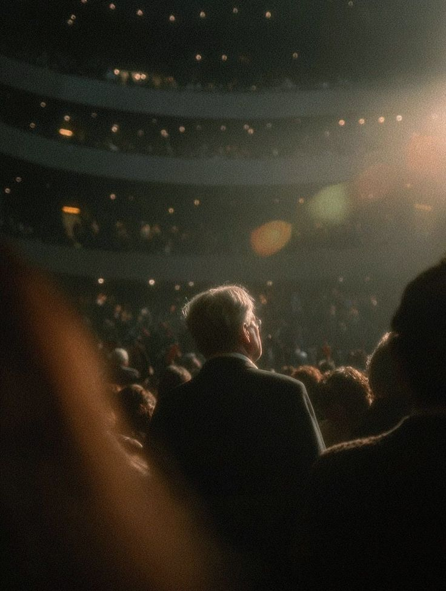
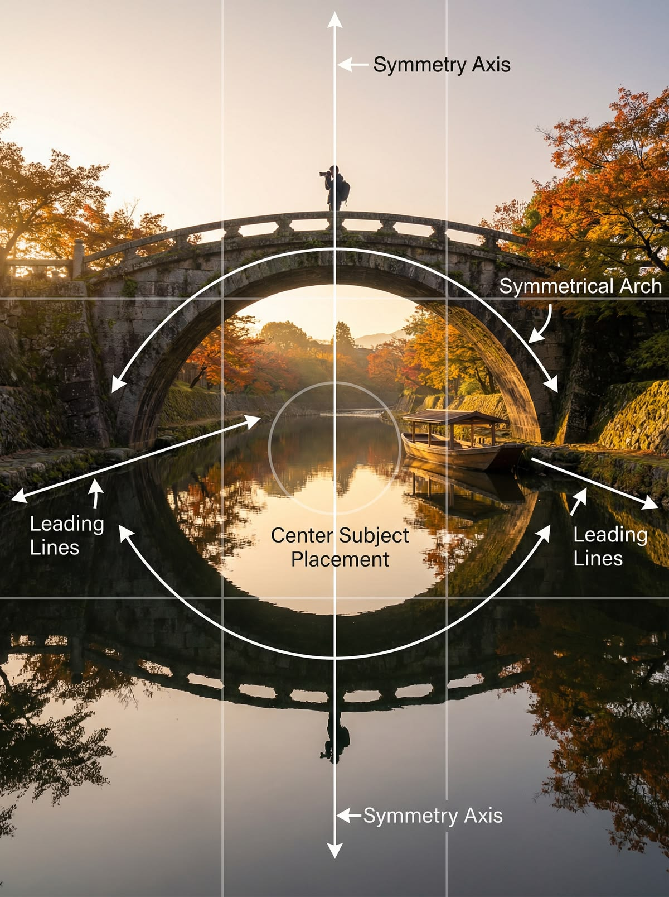
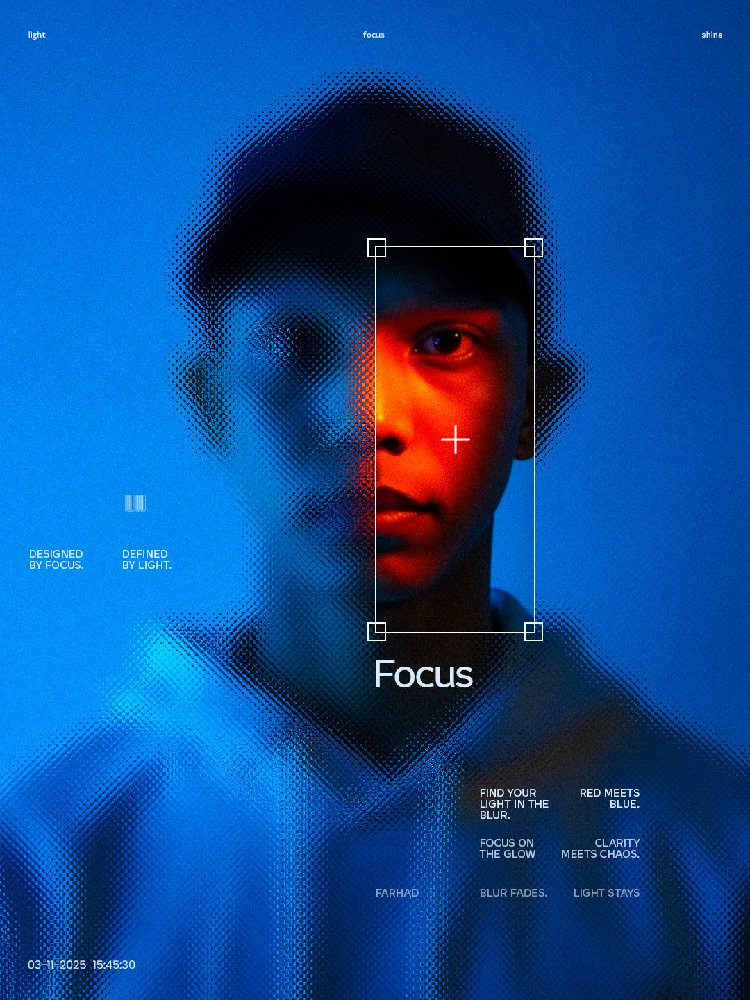

Capture
Take your photo
Point your camera and capture a moment. Any subject works — a portrait, a street scene, something personal.
Can AI create a better composition than you?
The algorithm is watching. So are we.

Point your camera and capture a moment. Any subject works — a portrait, a street scene, something personal.
The system analyses your photo and considers alternative compositions — rule of thirds, focal weight, negative space.
Your original framing appears alongside the AI's suggestion. No labels. Just the images.
Make your choice and see how it holds up. Neither answer is wrong. Both tell us something.
Click to upload an image


The algorithm reads light, weight, and depth insight. It finds the geometry in your scene and reconstructs the frame around what matters most.
Two visions of the same moment. See what you captured vs. what the algorithm proposed. Both are correct. Neither is complete.


Now that you know, which version feels more right to you. Does your instinct align with the algorithm's choice.
You are not alone in this. See how other participants voted on whether their instinct or the algorithm made the better frame.
The experiment continues. Capture something new and see how the result changes. Each image tells a different story.
Trust is always made in terms of data. Every choice you make here adds to our understanding of how humans and machines see differently.